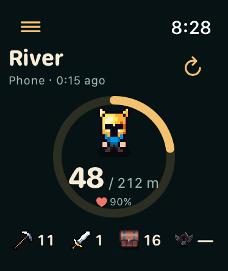

Watch dial and Refresh fixes
The dial keeps its existing size. Its stroke now sits inside the frame, so the scroll view no longer clips the top.



Phone Refresh
The visible button grows from 30 to 36 points. Its full 48 × 48 point label now has an explicit rectangular hit shape. The compact version uses a 44 × 44 point target.

The lower card is the current production widget running in an isolated native host. The upper, expired card is from an earlier run. Near-edge taps could not be delivered by simulator automation, so accidental unlock behaviour still needs physical-device acceptance. Native validation and limits
Remaining limitations
- Background progress has a one-hour maximum and a 20,000-task/kill work limit. High rates can reach the work limit much sooner.
- Survival and loot remain estimates. Recorded early-game comparisons predict death about 10–16% too late; positioning, bursts and some ability effects are simplified.
- Foreground phone snapshots publish every 15 seconds. Watch Refresh cannot force suspended Unity to generate fresh game data.
- The Watch advances the saved background estimate locally. Phone Live Activity counters update on Refresh; its elapsed timer advances separately.
- Watch history currently includes the latest ten runs overall. Skills show levels, and resources show totals, without XP progress or individual item breakdowns.
- Native Watch menus and status text are still English. Paired-phone refresh and some integrated navigation gestures still need device acceptance.
No version change or TestFlight upload. All seven Watch screens · Combat validation